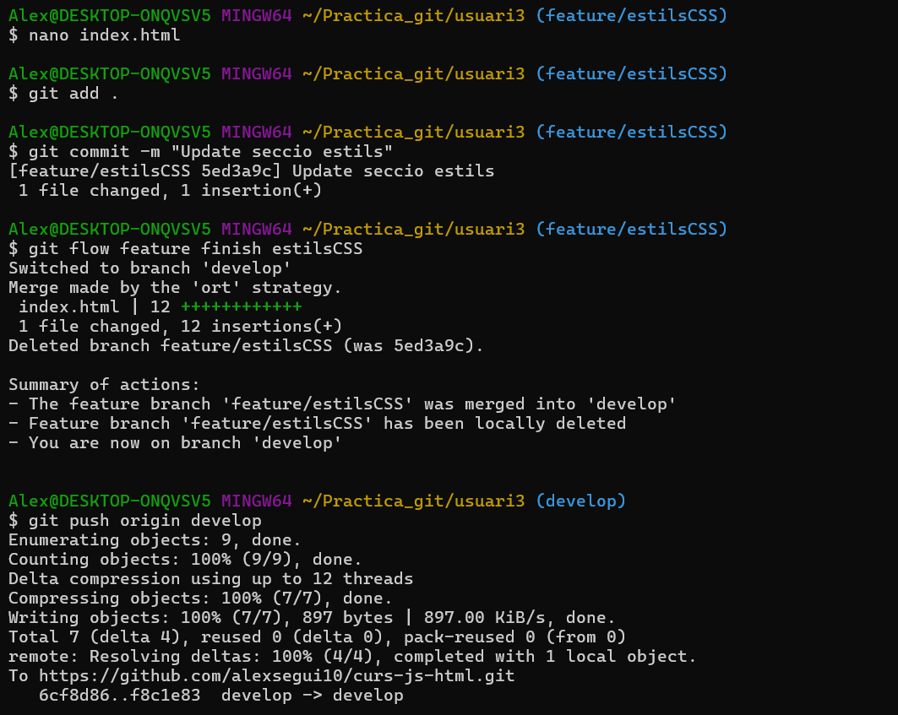

Práctica Git Flow
1 – Clonar repositorio y primer commit en master
2 – Inicializar git flow (develop y master)
3 – Crear carpetas de usuarios y index.html común
4 – Rama feature (feature/ui-layout) y merge a develop
5 – Sincronizar y revisar historial
6 – Iniciar release v1.0 y actualizar versión

7 – Finalizar release v1.0 (merge a master + tag)
8 – Hotfix v1.0.1 (corrección rápida)